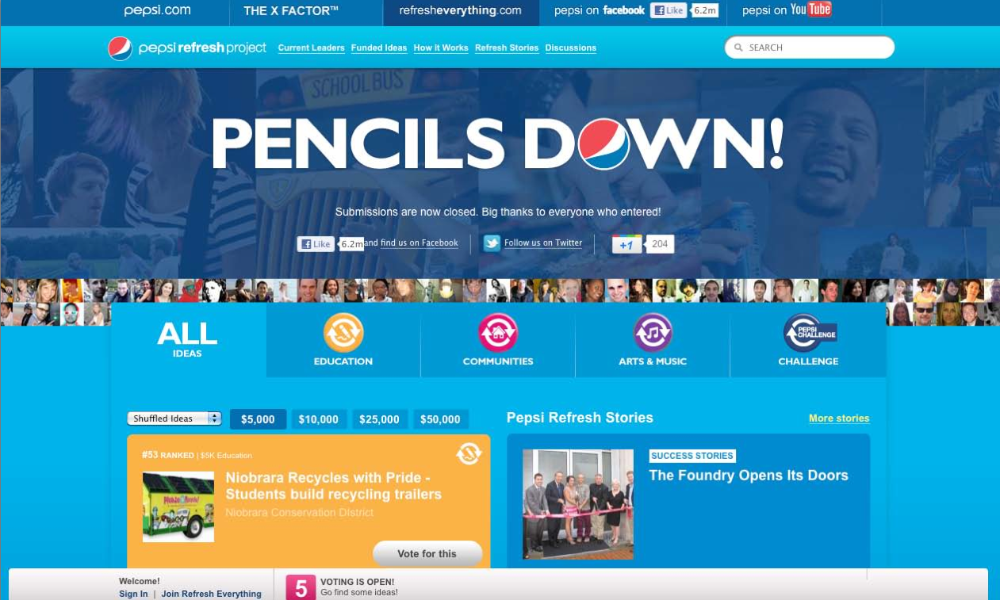
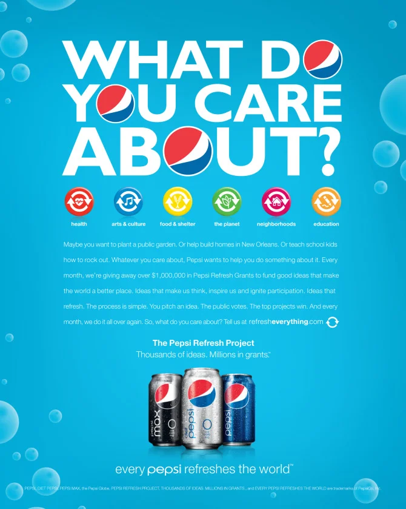

Pepsi Refresh
Project.
Pepsi / Huge
$20 million redirected from a Super Bowl ad. 87 million votes cast. Pepsi from #16 to #5.

The Bet
In 2010, Pepsi made a genuinely unusual decision: they pulled their Super Bowl advertising budget — $20 million — and redirected it toward funding good ideas from ordinary people. No 30-second spots. No celebrities holding cans. Just a platform that let anyone submit an idea to improve their community, and let the public vote on which ones deserved a grant.
The concept was bold. The execution lived entirely online. And someone had to be the first writer to put the whole thing into words — to make a pro-social grants platform feel as accessible, optimistic, and energizing as the idea behind it.
That was me.
My Role
- First writer on the platform
- UX & interface copy
- Campaign copy
- Platform voice & tone
Agency
- Huge
Recognition
- IxDA Interaction Award
- Best in Category: Connecting
- Cannes Lions
The Bet
The tonal challenge was specific. The copy had to be warm without being saccharine, civic without being preachy, and distinctly Pepsi without letting the brand overshadow the people and ideas it was supposed to be celebrating. The moment it felt like advertising, the whole premise collapsed.
"$20 million. 1,000 funded ideas. 87 million votes cast. Pepsi jumped from #16 to #5 among America's most reputable brands."IxDA Best in Category, Connecting — 2012
What I Built
RefreshEverything.com was a full community platform: submit an idea, promote it, vote for others, track results, read stories about funded projects already underway. Every surface needed writing — submission flows, voting prompts, idea pages, community discussion, email campaigns, social integration, mobile apps.
The writing challenge was consistency of voice under varied conditions. A prompt encouraging someone to submit their first idea needed different energy than a confirmation email after a grant was awarded. A voting interface needed to feel lightweight; a funded project story needed to feel real and specific. Same brand, same platform, very different jobs.

What Changed
1,000 ideas funded in year one — 108 schools, 68 parks and playgrounds, 20 children's homes and shelters. 87 million votes cast. Pepsi's brand favorability, trust, and purchase intent among millennials all improved significantly. Forbes/Reputation Institute: Pepsi jumped from #16 to #5 among America's most reputable brands. Cannes Lions. IxDA Best in Category, Connecting.
The bet paid off. Turns out people respond to a brand that actually does something — when the thing it does is real, and when the writing makes them feel like participants instead of an audience.